In Loving Memory of Nana Obenewa Turkson
Sunday, July 27th, 1958 - Thursday, July 16th, 2015
Humber College, Toronto" alt="Bachelor of Science in Hospitality & Tourism Management (1986)
Humber College, Toronto" style="display:none"> 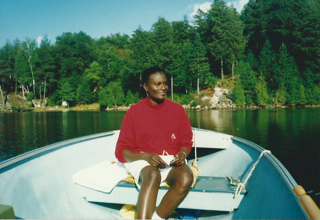 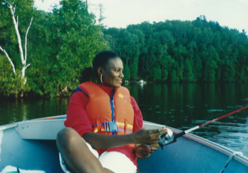 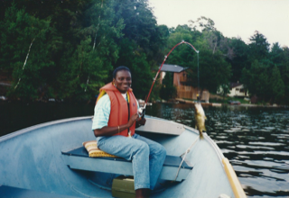 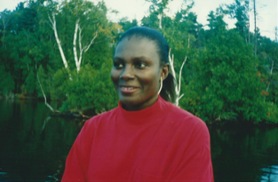
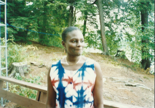 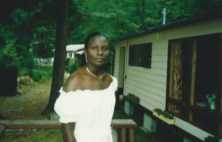 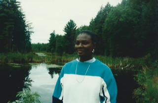
 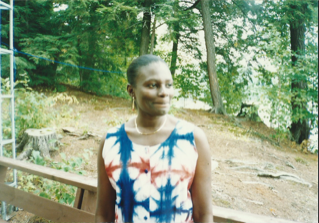
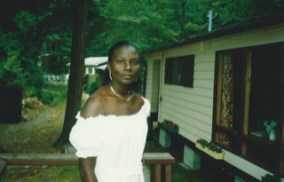
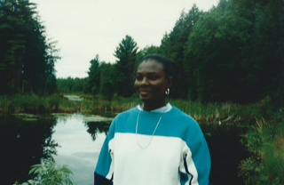
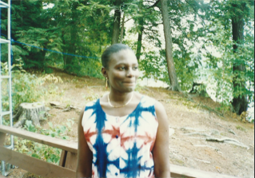
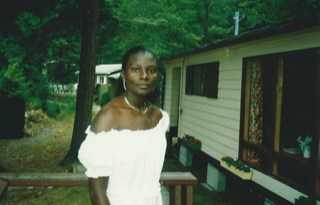
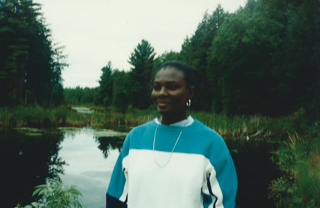